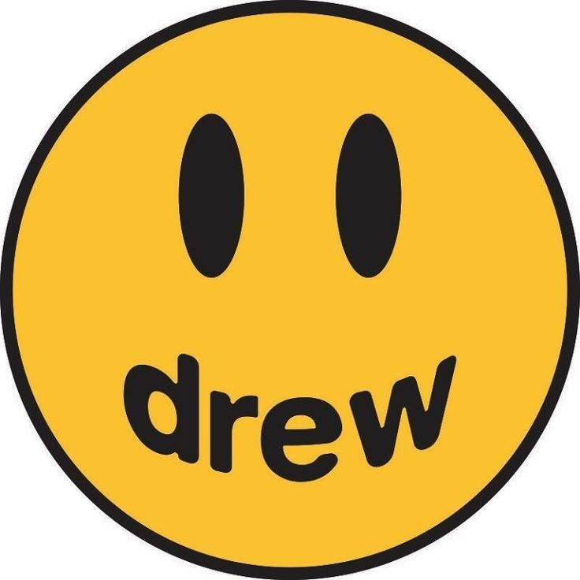
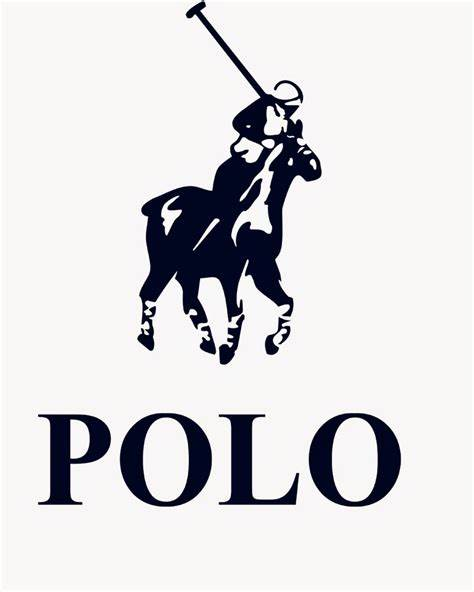
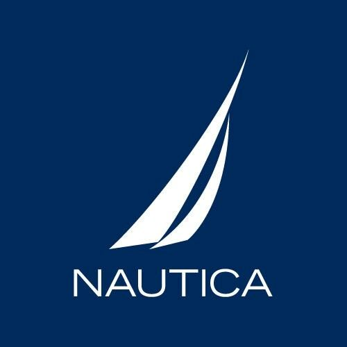
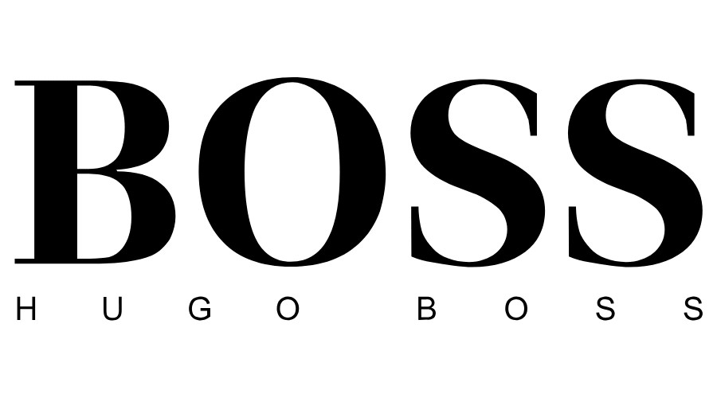

Lacoste es una empresa francesa fabricante de ropa, relojes, perfumes, zapatos, cinturones y maletas, entre muchos otros artículos de lujo, con sede central en la ciudad de París. Su producto más famoso, es su camisa Polo, hecha de material piqué.
NikeEs una empresa multinacional estadounidense dedicada al diseño, desarrollo, fabricación y comercialización de equipamiento deportivo: balones, calzado, ropa, equipo, accesorios y otros artículos deportivos.
AdidasEs una compañía multinacional alemana fundada en 1949 con sede en Herzogenaurach, ciudad ubicada en Baviera, y que se dedica a la fabricación de equipamiento deportivo y productos de moda (bolsos, camisas, relojes, gafas, etc.)
DrewProablemente hayas visto cientos de veces a Justin Bieber llevar prendas con este smiley con la palabra Drew. Pues bien, se trata de su propia marca de ropa, Drew House, de la que el cantante es el mejor embajador. Bieber creó la marca en 2018 y en apenas dos años ha conseguido que otros artistas lleven su logo y su nombre (Drew es su segundo nombre).
VersacceVersace es una de las principales casas de moda del mundo. Versace diseña, comercializa y distribuye vestuario, accesorios, fragancias, maquillaje y muebles de lujo bajo las diversas líneas del Grupo Versace, como: Gianni Versace Couture, Versace Jeans Couture, Versace Home Collection y Versace Collection.
Hugo BossEn 1923, Hugo Boss fundó su propia compañía de ropa en Metzingen, Alemania, donde todavía tiene su sede. En 1924, comenzó una fábrica junto con dos socios. La compañía produjo camisas, chaquetas, ropa de trabajo, ropa deportiva e impermeables
PoloPolo Ralph Lauren Corporation es una empresa de moda estadounidense fundada por el diseñador neoyorquino Ralph Lauren en 1967, conocida por su gama de productos que abarcan la indumentaria, fragancias, accesorios y complementos para el hogar. Sus productos se comercializan a través de una amplia variedad de marcas registradas —como Polo Ralph Lauren o Ralph Lauren Purple Label
NauticaNautica es una marca de ropa estadounidense de Authentic Brands Group que ofrece principalmente ropa y accesorios para hombres, mujeres y niños, así como para el hogar, relojes y fragancias. Nautica fue fundada en 1983 por el diseñador de ropa David Chu y un socio Nautica (empresa de ropa)